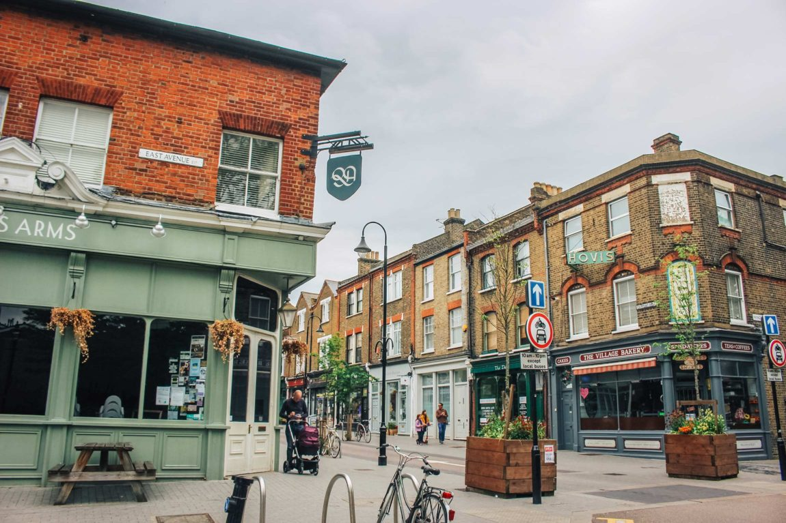
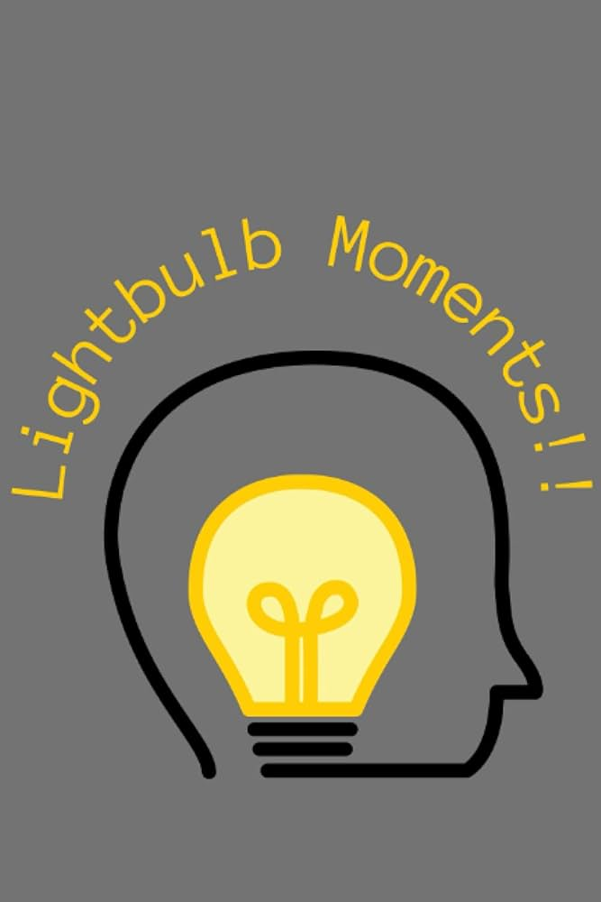

This section is about me.
Upbringing:
Growing up in Walthamstow, a vibrant area in North London, I was surrounded by a mix of cultural diversity and creative energy that shaped my perspective on life. From an early age, I developed a fascination with computers. My first experiences with technology involved tinkering with Windows XP and exploring how it worked, sparking a lifelong curiosity about computing. This familiarity with computers became a core part of my upbringing, allowing me to build foundational skills that I have carried into adulthood.
Being raised in a community with a blend of innovation and tradition, I was encouraged to be both inquisitive and resourceful. These values have not only defined my relationship with technology but have also driven me to continually seek opportunities for growth and exploration.
Passions:
I am deeply passionate about learning, especially when it involves technology and computing. For me, every new skill or concept is an opportunity to expand my understanding and solve meaningful problems. I thrive on tackling challenges and finding creative solutions, whether it involves debugging code or mastering a new programming language. This passion for learning fuels my ambition to delve deeper into the computing field and contribute meaningfully to projects that have real-world impact.
Outside of my love for technology, I am equally committed to maintaining an active lifestyle. Running is one of my favorite ways to stay fit and focused, offering me a chance to clear my mind and reflect on personal goals. This balance between mental and physical growth keeps me energized and ready to take on new challenges.
Projects:
I am proud to have pursued projects that showcase both my creativity and technical skills. As a published author, I have honed my ability to communicate ideas effectively—a skill that translates seamlessly into the world of computing. In the context of technology, I created this very website using HTML, CSS, and JavaScript, demonstrating my ability to design and build functional, user-friendly interfaces. Additionally, I developed a game using the same languages, which allowed me to explore interactive design and problem-solving in a fun and engaging way.
These projects reflect my dedication to combining creativity with technical expertise. They also highlight my eagerness to learn and apply new skills, which I am excited to further develop through the computing bootcamp. and beyond.